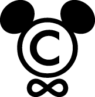
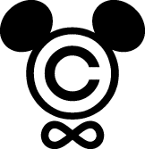
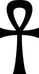
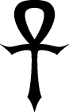
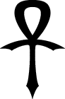

David Goodger’s Graphics
| Contact: | goodger@python.org |
|---|---|
| Updated: | 2008-10-07 |
These SVG (scalable vector graphics) files were created by me from scratch using Inkscape, an excellent and versatile Free vector drawing package. Thumbnails are shown below, linked to the SVG files (right/control-click and “Save Link As...” to save them).
Mickey’s Infinite Copyright
Featured on Boing Boing and in Lawrence Lessig’s blog, this image is now available as a sticker from BumperActive.com, with 22% ($1) per sale going to the Creative Commons.
When will Mickey Mouse’s 1928 debut, Steamboat Willie, enter the public domain? At the current rate, never! As of this writing, it’s 78 years old, fer cryin’ out loud!
What this means is that nothing in the commercial creative world (books, art, film, music, etc.), published during your lifetime, will ever enter the public domain in your lifetime. In other words, it’s locked up for life. That’s really sad, and disastrous for dynamic culture! You can fight this trend using Creative Commons licenses on your work.
Please feel free (as in freedom) to put these on personal T-shirts, especially if you’re visiting Disney World or Disneyland, or attending a Disney film premiere ;-).
| Copyright: | ©2005-2006, David John Goodger |
|---|---|
| License: | Creative Commons Attribution-NonCommercial-ShareAlike. (Contact me if you’d like to do something commercial with these images. Why? Because I want the Creative Commons to benefit from the proceeds.) |

The original. |

A variation on the typeface used for the copyright symbol. |

No infinite copyright! (The “no symbol” or “prohibition sign”—the red circle with a diagonal line—comes from Wikipedia.) |
{kind=link}
{kind=link}
Updated 2006-01-08: Changed the infinity symbol to use a more symmetrical typeface.
Updated 2008-10-07: Added the “No infininite copyright!” version.
Peace Symbols
The rainbow gradient is modified from one I found in the Open Clip Art Library.
| Copyright: | None. I hereby dedicate these files to the public domain (also indicated in the SVG files’ metadata). |
|---|

A black, “serif” (curved, tapered intersections) peace symbol. |
{kind=link}
{kind=link}
{kind=link}
{kind=link}
Peace!
Ankh
The Ankh is the Egyptian symbol of life.
| Copyright: | ©2005, David John Goodger |
|---|---|
| License: | Creative Commons Attribution-NonCommercial-ShareAlike (contact me if you’d like to do something commercial with these images) |

A serif Ankh, reminiscent of an iron cross. |

A highly curved, sharp Ankh. |

A curved, pointed Ankh. |
{kind=link}
{kind=link}
{kind=link}
Yin-Yang
| Copyright: | None. I hereby dedicate these files to the public domain (also indicated in the SVG files’ metadata). |
|---|
{kind=link}